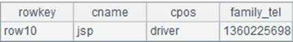

Description:
The external library function performs an unsupervised clustering algorithm that divides a dataset into predetermined number of clusters based on the minimum error function.
Syntax:
|
kmeans(A,k) |
Perform training on training set A using training parameter k, and return training result model R |
|
kmeans(R,B) |
Perform prediction on scoring set B according to model R and return the prediction result |
|
kmeans(A,k,B) |
Connect training and prediction; perform a linkage task of model training and data scoring by inputting training data A, training parameter k and scoring data B, and return the prediction result |
Parameter:
|
A |
A sequence, which is the training set |
|
k |
An integer, which is the number of clusters; support 2 only |
|
R |
A sequence, which is the result returned by syntax kmeans(A,k) |
|
B |
A sequence, which is the scoring set |
Return value:
A sequence
Example:
|
|
A |
|
|
1 |
[[1,2,3,4],[2,3,1,2],[1,1,1,-1],[1,0,-2,-6]] |
Training set A |
|
2 |
2 |
Parameter k |
|
3 |
[[6,2,3,5],[0,3,1,5],[1,2,1,-1],[1,5,2,-6]] |
Scoring set B |
|
4 |
=kmeans(A1,A2) |
Perform training on A1 according to k=2 and return training result R |
|
5 |
=kmeans(A4,A3) |
 |
|
6 |
=kmeans(A1,A2,A3) |
Input the training set, parameter k and scoring set to perform training and scoring in a row, and return prediction result, which is the same as A5 |